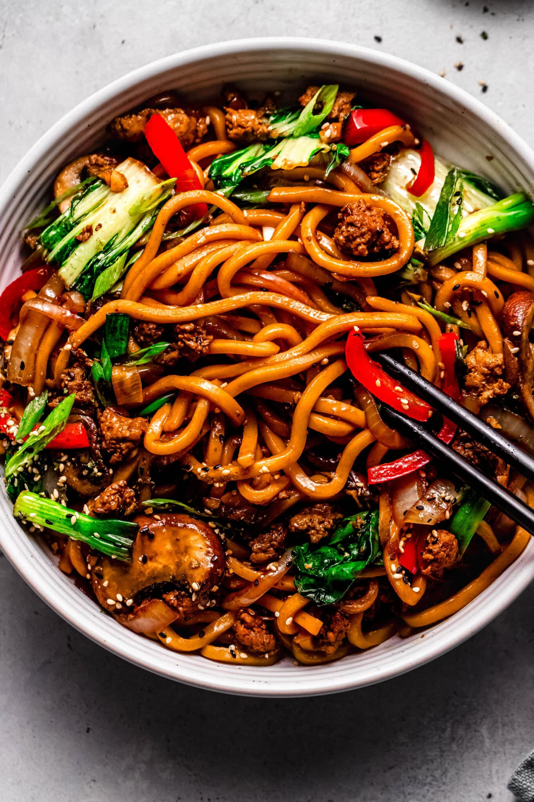

Ingredients
- 200g udon noodles
- 2 cups soy-based broth
- 1/2 cup sliced carrots
- 1/2 cup mushrooms
- 1/4 cup spinach or greens
- 2 tablespoons soy sauce
- 1 teaspoon ginger (grated)
- 2 cloves garlic (chopped)
- 1 tablespoon oil
- Salt and pepper to taste
- Spring onions for garnish
Instructions
- Boil water in a pot and cook the udon noodles according to the package instructions. Drain and set aside.
- Heat oil in a pan and sauté garlic and ginger for a few seconds until fragrant.
- Add sliced carrots and mushrooms, and cook for 2–3 minutes.
- Pour in the soy-based broth and bring it to a gentle boil.
- Add soy sauce, salt, and pepper to adjust seasoning.
- Add spinach or greens and cook for another 1–2 minutes.
- Add the cooked noodles to the broth and mix gently.
- Garnish with spring onions and serve hot.